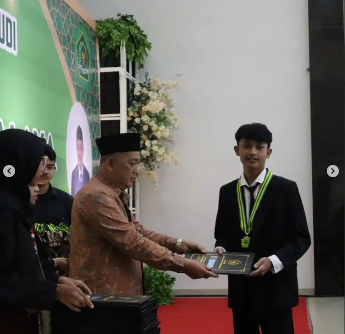

Merekam jejak langkah, keceriaan, kejuaraan, dan kreativitas siswa-siswi MAN 2 Kota Tasikmalaya dalam berbagai momen inspiratif.

Eksperimen reaksi kimia larutan oleh tim olimpiade sains.

Latihan kepemimpinan dan perumusan program kerja tahunan siswa.

Tim Futsal Putra MAN 2 Kota Tasikmalaya meraih gelar Juara 1 tingkat provinsi.

Pertunjukan tari kolosal tradisional di panggung auditorium utama.

Pembinaan ketahanan mental dan fisik bagi anggota ekskul taekwondo.

Proyek pembuatan aplikasi edukasi oleh siswa peminatan MIPA.
Menghafal Al-Qur'an, memperdalam ilmu tajwid, serta membentuk generasi Qur'ani yang berakhlak mulia dan cinta Al-Qur'an.

Momen haru pelepasan 320 siswa yang berhasil lolos ke PTN dan universitas dunia.